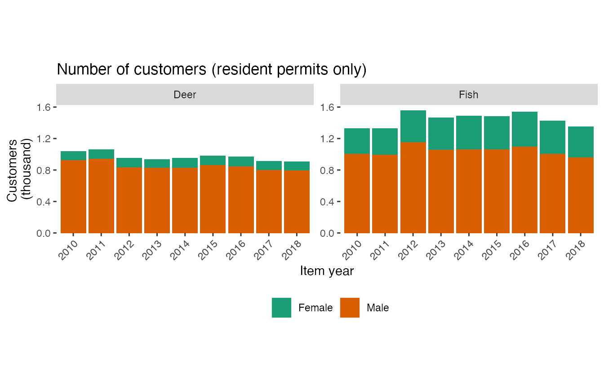

custom-analyses-in-r.RmdThe same functions that are used in the interactive web-based application to extract, analyze, and plot data are also accessible from R. These functions provide a basic framework for creating custom analyses. These functions can be used in R scripts to perform data analysis or in combination with R Markdown to create reports in a variety of formats. This vignette is itself an example of an R Markdown report.
The first step in writing a custom analysis is to load the data from the database. To faciliate this step the huntfishapp package provides the filterData function. Please refer to the function’s help file for all the details on using this function (?filterData) . The filterData function takes three inputs: (1) a data source specification (dataSource), (2) a connection to the database (conn), (3) a list of data filters (activeFilters).
To create a connection we first must add an ODBC data source under the name “HuntFishApp” and specify the IP address of the database server. Please refer to relevant documentation for your operating system (e.g., Microsoft Administer ODBC data sources) and contact your database administrator if you need assistance. This data source is the same as that used by the web-based application. The database should contain a view “huntfishapp”. After creating the ODBC data source we can create a connection in R using the code below. The package keyring is used to avoid disclosing the password in the R code.
# Database connection conn <- DBI::dbConnect(odbc::odbc(), dsn = "HuntFishApp", uid = keyring::key_get("HuntFishAppUID"), pwd = keyring::key_get("HuntFishAppPWD"))
Next, we need to specify any data filters (see help file ?filterData). Here we specify that we only wish to include resident deer and fish permits for permit years between 2010 and 2018.
Finally, we are ready to call filterData to create a SQL query. We will preview the results using the glimpse function from the dplyr package, but will not load the data in R yet. Note that in this vignette we specify dataSource = "csv" for demonstration purposes, but in general dataSource = "sql" should be used.
# Build SQL query to load data permits <- filterData(dataSource = "csv", activeFilters = activeFilters) # Preview query result permits %>% glimpse() #> Rows: 25,288 #> Columns: 18 #> $ itemUID <int> 3341, 3342, 8705, 8706, 15257, 19648, 19649, 24874, 248… #> $ issueDate <date> 2010-08-23, 2010-08-23, 2011-08-12, 2011-08-12, 2012-1… #> $ itemResidency <chr> "T", "T", "T", "T", "T", "T", "T", "T", "T", "T", "T", … #> $ duration <chr> "Season", "Season", "Season", "Season", "Season", "Seas… #> $ durationValue <dbl> 1, 1, 1, 1, 1, 1, 1, 1, 1, 1, 1, 1, 1, 1, 1, 1, 1, 1, 1… #> $ residency <chr> "T", "T", "T", "T", "T", "T", "T", "T", "T", "T", "T", … #> $ state <chr> "NE", "NE", "NE", "NE", "NE", "NE", "NE", "NE", "NE", "… #> $ itemType <chr> "Deer", "Deer", "Deer", "Deer", "Deer", "Deer", "Deer",… #> $ itemYear <int> 2010, 2010, 2011, 2011, 2012, 2013, 2013, 2014, 2014, 2… #> $ price <dbl> 30, 30, 30, 30, 30, 30, 30, 30, 30, 30, 31, 88, 37, 30,… #> $ birthYear <dbl> 1950, 1950, 1950, 1950, 1950, 1950, 1950, 1950, 1950, 1… #> $ gender <chr> "Male", "Male", "Male", "Male", "Male", "Male", "Male",… #> $ county <chr> "merrick", "merrick", "merrick", "merrick", "merrick", … #> $ customerUID <int> 1, 1, 1, 1, 1, 1, 1, 1, 1, 1, 1, 1, 1, 2, 2, 2, 2, 2, 2… #> $ age <dbl> 60, 60, 61, 61, 62, 63, 63, 64, 64, 65, 66, 67, 68, 54,… #> $ ageGroup <chr> "55-64", "55-64", "55-64", "55-64", "55-64", "55-64", "… #> $ month <dbl> 8, 8, 8, 8, 10, 8, 8, 8, 8, 11, 9, 11, 10, 9, 10, 11, 1… #> $ year <dbl> 2010, 2010, 2011, 2011, 2012, 2013, 2013, 2014, 2014, 2…
After we are setup to load the data, we can start to design our analysis. Several analysis functions are provided. For example, we can use the countCustomers function to count the number of individual within a specified group (‘See Also’ section of help file lists other analysis functions ?countCustomers). The countCustomers function has two inputs: (1) the permit data (df) and (2) a list of grouping variables (groupVars). Here we specify that we wish to count customers for groups defined by gender, item type, and item year.
# Pass data through analysis function permitsSummary <- permits %>% countCustomers(c("gender", "itemType", "itemYear")) # Preview results permitsSummary #> # A tibble: 36 x 4 #> gender itemType itemYear customers #> <fct> <fct> <fct> <int> #> 1 Female Deer 2010 113 #> 2 Female Deer 2011 120 #> 3 Female Deer 2012 117 #> 4 Female Deer 2013 114 #> 5 Female Deer 2014 122 #> 6 Female Deer 2015 118 #> 7 Female Deer 2016 127 #> 8 Female Deer 2017 114 #> 9 Female Deer 2018 111 #> 10 Female Fish 2010 328 #> # … with 26 more rows
After performing the analysis, we may wish to create a plot of the results. Several plot functions are provided. The buildBarPlot function is used to create a stacked bar graph (‘See Also’ section of help file lists other plot functions ?buildBarPlot). Here we create a bar graph with permit year as the x-variable, number of customers as the y-variable, gender as the fill color, and subplots for each permit type.
# Stacked bar graph by permit year buildBarPlot(permitsSummary, x = "itemYear", y = "customers", fill = "gender", facet = "itemType", title = "Number of customers (resident permits only)", facetScales = "fixed", scaleLabels = waiver()) #> Warning: `expand_scale()` is deprecated; use `expansion()` instead.

Once we understand the basic steps in the framework it is easy to design and perform custom analyses. Here we put all the steps together to create a line plot indicating the churn rate of deer hunters over time in Lancaster and Douglas counties.
# Build SQL query, analyze data, plot results filterData(dataSource = "csv", activeFilters = list(itemYear = c(2010, 2018), itemType = c("Deer"), county = c("Lancaster", "Douglas"), itemResidency = "T")) %>% calcChurn(c("county")) %>% mutate(itemYear = as.integer(as.character(itemYear))) %>% buildLinePlot(x = "itemYear", y = "churnRate", fill = "county", title = "Deer hunter churn rate") #> Warning: `expand_scale()` is deprecated; use `expansion()` instead.
